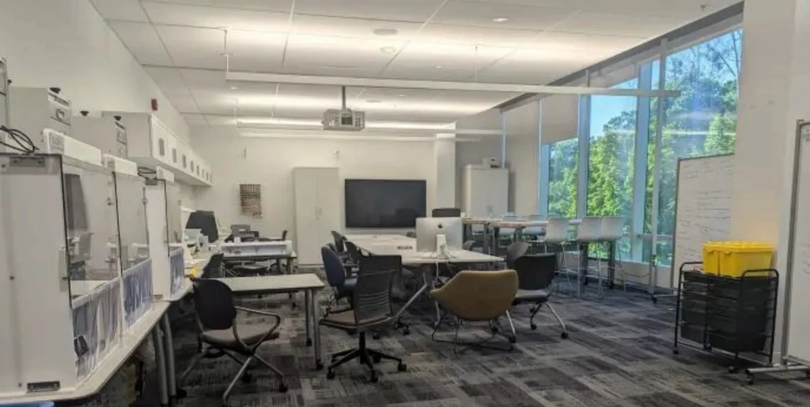
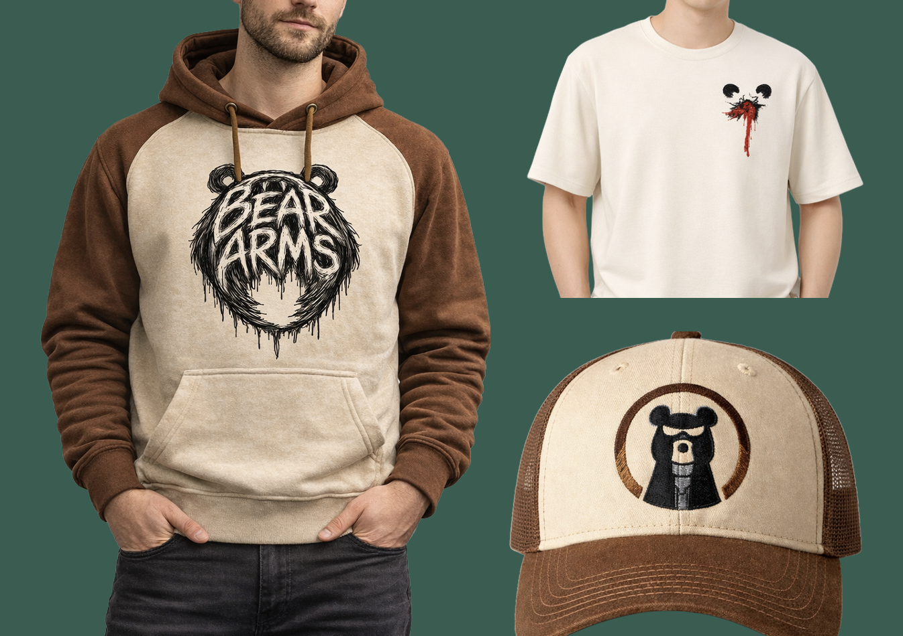
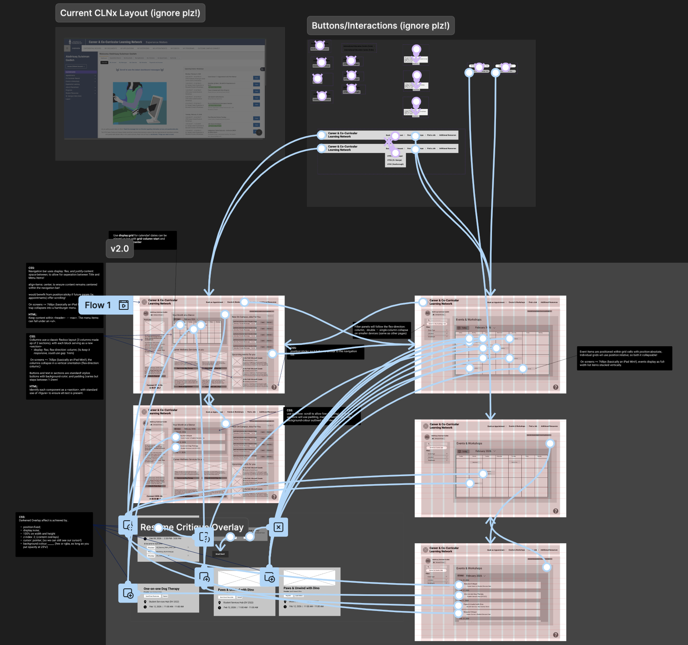

Physical + Spatial UX
Community Corner @ UTM Makerspace
A hybrid physical + information touchpoint system that helps students discover projects, share early ideas, and join collaboration with less social friction.
Read Summary → View Full Process →
Physical + Spatial UX
A hybrid physical + information touchpoint system that helps students discover projects, share early ideas, and join collaboration with less social friction.
Read Summary → View Full Process →
ECOMMERCE UX DESIGN
A concept-driven ecommerce experience focused on improving product browsing, storytelling, and checkout clarity.
Read Summary → View Full Process →
WEBSITE UX AUDIT + REDESIGN
A usability-focused redesign of the University of Toronto’s CLNx dashboard, improving how students find appointments, events, and workshops through clearer navigation, information hierarchy, and responsive layout planning.
Read Summary → View Full Process →PROJECT SUMMARY

Community Corner is a hybrid physical + information touchpoint system that reduces social hesitation and helps students discover projects and join collaboration in the UTM Makerspace. It turns participation into a visible, low-pressure flow—from browsing → contributing → connecting.
Role: UX Designer — Research, Synthesis, Concept development, Prototyping (paper + spatial)
Contribution: Led user research to identify collaboration barriers, synthesized insights into design priorities, and built the Community Corner system (community board, idea wall, feedback box, seating corner). Created and iterated paper prototypes + a Maya spatial model to test “what to do next” clarity and navigation flow.
Process: Observation + semi-structured interviews → coding/affinity mapping → ideation → prototyping → task-based usability testing → iteration.
Outcome: Improved signifiers, mapping, and step-by-step structure so users can quickly understand what the space is for, where to start, and how to participate.
Focus Areas: Social interaction design, Spatial UX, Onboarding / entry points, Participation flow
Project Summary

Bear Arms is a concept ecommerce website exploring how a message-driven brand can combine storytelling and shopping into one coherent digital experience. The project focuses on building a clearer, more guided purchase journey while balancing brand narrative with usability.
Role: UX Designer — Information Architecture, User Flow, Wireframing, Prototyping, Artifact Refinement
Contribution: Led the UX design and refinement of the core shopping experience in Figma, including homepage structure, browsing flow, product detail flow, cart, checkout, and order confirmation. I was primarily responsible for the website prototype itself, especially flow integration, page refinement, and preparing the final artifact for presentation.
Process: Mapped the end-to-end shopping journey, refined the site structure, and connected key screens into a complete prototype flow. I also used peer feedback to identify usability issues, decide which revisions were most important, and improve the clarity and completeness of the final artifact.
Outcome: Produced a more structured and presentation-ready ecommerce prototype with a clearer user journey from product discovery to order completion. The final result better supports both shopping flow and brand storytelling within the same experience.
Focus Areas: Shopping flow, product detail experience, cart and checkout UX, interaction clarity, information architecture, brand-story integration
Project Summary

CLNx is a student-facing career and co-curricular platform used to book appointments, find events, and access career resources. Although the platform contains useful information, its dashboard makes high-frequency tasks difficult by mixing personal schedules, public events, repeated navigation, and unrelated announcements in the same space.
This redesign focused on helping students quickly understand where to find their appointments, events, and workshops. The project used heuristic evaluation, user journey mapping, mid-fidelity wireframes, and developer handoff annotations to improve task clarity without visually rebranding the platform.
Role: UX Designer — User Journey Mapping, Heuristic Evaluation, Developer Handoff, Wireframe Support
Contribution: Led the user journey mapping for the core student task of checking upcoming appointments and events. Created the persona-based journey, identified pain points, mapped emotional friction, and translated the sad path into design priorities. Participated in the heuristic audit, contributed to selected wireframes including My Bookings and the Resume Critique overlay, and created developer handoff annotations for layout, responsiveness, and semantic HTML.
Process: Used heuristic evaluation to identify usability issues in the existing CLNx dashboard, then mapped the current user journey to understand where students lose confidence or abandon the task. From these findings, the team created mid-fidelity wireframes focused on clearer scheduling visibility, better navigation hierarchy, and more personalized dashboard content. Developer annotations were added to explain CSS layout strategies, responsive behavior, and implementation logic.
Outcome: Redesigned the CLNx dashboard around the student’s core task: checking upcoming appointments, workshops, and events. The final concept surfaced schedule information earlier, reduced navigation ambiguity, separated personal and public content, and provided a more implementation-ready structure through dev handoff notes.
Focus Areas: Journey Mapping, Information Architecture, Dashboard UX, Heuristic Evaluation, Developer Handoff, Responsive Layout